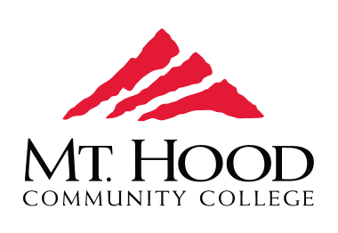
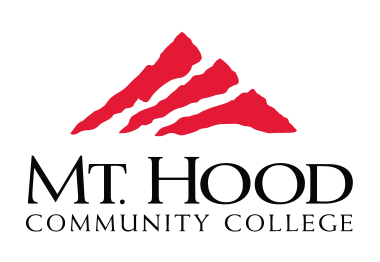
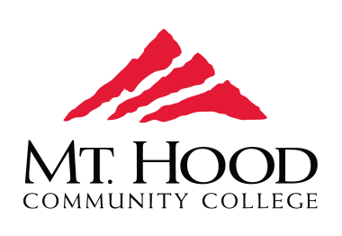
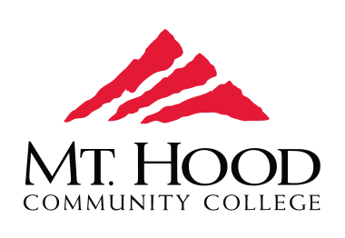

My professional career started at 19yrs old. As a student at Mt.Hood Community College, I explored my options and eventually went from a certificate programming to a transfer degree for computer science. In this time I spent 5 years at the Division Street Theater. Following the end of my tenure at Mt.Hood I went and worked at Costco Wholesale where I would collectively spend 4.5 years working both retail and security.

Where I got my true start and refinement in software was at Portland
State University. Going through the gauntlet that was the early courses
all the way to the point of being able to tutor and assist in that
education.
Here is where I learned how to effectively communicate about
software non-technical recipients. Where I learned how to effectively
work as a team of software developers. Finally it is where I found a
passion problem solving, software and education.
I now have a Bachelor's Degree in Computer Science. Once I finished my
degree I began going on the hunt for work, finding the professional
world new and arduous terrain.
I currently am working on a portfolio and skillset that surrounds
full stack development. During my time in school I learned a
considerable amount about Backend and Cloud development as well.
The goal I will be working towards is not only a Backend/Full
Stack Dev, but also a Computer Science Educator. With that I will also
be pursuing a Master's degree in Computer Science to start that journey.